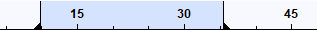

Playback
Contents
- Play button
- Playback Regions, Quick-Play Regions and Play Regions
- Keyboard commands to skip playback position by specified short and long periods
- Play relative to mouse pointer or selection
- Play short periods around selections
Play button
The easiest way to control Audacity playback is with Transport Toolbar:

 Clicking Play plays from the cursor point to the end of the project, or from the start of the selection region to the end of that region.
Clicking Play plays from the cursor point to the end of the project, or from the start of the selection region to the end of that region.
 The alternative Loop Play action for the Play button is activated by holding Shift while clicking Play. The button changes to display two circular green arrows to indicate Loop Play.
The alternative Loop Play action for the Play button is activated by holding Shift while clicking Play. The button changes to display two circular green arrows to indicate Loop Play.
 Play Cut Preview will play audio either side of a selection to preview what deleting the selection will sound like. Hold down Ctrl (⌘ on Mac) while clicking Play.
Play Cut Preview will play audio either side of a selection to preview what deleting the selection will sound like. Hold down Ctrl (⌘ on Mac) while clicking Play. - Alternatively you can use the C shortcut to preview the cut. This also causes the Play button image to change to Play Cut Preview.
 Click Pause, or its shortcut P, to temporarily pause playing or recording without losing your place. Click Pause a second time to resume.
Click Pause, or its shortcut P, to temporarily pause playing or recording without losing your place. Click Pause a second time to resume.
 Clicking Stop stops playing or recording immediately, and releases Pause if depressed. You must stop playback or recording before you can use the Skip buttons in the Transport Toolbar.
Clicking Stop stops playing or recording immediately, and releases Pause if depressed. You must stop playback or recording before you can use the Skip buttons in the Transport Toolbar.
- The shortcut Space can be used to either play or stop. After stopping, playback resumes from its last starting point.
- Alternatively, use X or to stop playback and set the cursor there. Playback will resume from the stop point on pressing Play.
Playback Regions, Quick-Play Regions and Play Regions
The standard playback region associated with a shaded selection region in the waveform is indicated in the Timeline by a thin horizontal gray bar with arrowheads on each end. For example in the image below, a region from 9 to 31 seconds.has been drawn in the waveform, and the matching arrowed region in the Timeline also extends from 9 to 31 seconds. This region will always play once when you press Space or a Play button.
- 
If there is only an editing cursor in the waveform, playback always starts from that cursor position and continues until the end of the project (unless you stop playback).
Whenever audio is played, a green downward-pointing triangle shows the current audio playback position. In the image below, playback starts at 9 seconds at the position of the editing cursor (represented in the Timeline by a black vertical line with left-pointing arrowhead). Playback had reached 14 seconds when the image was taken.
There may be times when you want to move around to hear arbitrary parts of the audio while still retaining the position of the editing cursor or region in the waveform. Quick-Play lets you drag in the Timeline to play that region immediately (or lets you click to start playback at that point immediately), without moving the waveform region or cursor and without having to stop and restart playback.
In the image below we dragged a Quick-Play region to play from 13 to 37 seconds. That region is indicated in the Timeline by a thick horizontal gray bar with arrowheads on each end, and playback was at 19 seconds when the image was taken.
If you hear some important audio during Quick-Play you can move the waveform region or cursor to that point without affecting Quick-Play playback, but this still allows you to restart standard playback from the important spot.
On occasion you may always want to play the exact same region, even if the region or cursor in the waveform is elsewhere. You can use to lock playback to the current playback region (or to the current position of the Quick-Play region). The locked region is indicated in the Timeline by a thick horizontal red bar with arrowheads on each end. In the image below, playback will always occur from 13 to 28 seconds until is used to release the Play Region.
Keyboard commands to skip playback position by specified short and long periods
These commands skip the playback cursor backwards (left) or forwards (right) by a short or long period of time. The default short period skipped is one second and the default long period skipped is 15 seconds. You can change the length of the default short or long period to be skipped at "Seek Time when playing" in the Playback Preferences.
Action Shortcut Short seek backwards Left or , Short seek forwards Right or . Long seek backwards Shift + Left or Shift + , Long seek forwards Shift + Right or Shift + .
|
You cannot seek backwards to left of the current position of the playback cursor. |
Play relative to mouse pointer or selection
These are three keyboard commands that let you play a few seconds of audio without changing the selection. They can be really useful during editing, such as when you're trying to find the exact spot to cut and paste.
Action Shortcut Play One Second 1 Play To Selection B Play Cut Preview C
Play One Second (1)
Press 1 while the mouse is pointing to a particular point on the Timeline, and you will hear one second of audio centered on that time. The mouse does not need to be over the waveform itself, and the pointer can be inside a selection, so giving you a way to play one second of that selection, centered on the pointer. For example, position the mouse at 1.0 seconds and press 1 , and you will hear the time range from 0.5 to 1.5 seconds (below).

Play To Selection (B)

Suppose you've selected a range of audio (above), and you want to make sure it's exactly what you want to cut out. In order to determine whether you've selected exactly the right range of audio, you can not only listen to the selection, but you can position the mouse pointer so as to listen to any desired length of audio before or after the selection.
If you press Space, you'll hear the whole selection (indicated by the playback region shown in the Timeline) (below).

The "B" key lets you play the audio between the mouse pointer and the selection - what you hear depends on where the mouse pointer is. Move the mouse to a part of the audio you're interested in hearing, and press B, without clicking the mouse button (the first through the fourth images below).
If the mouse pointer is to the left of the selection and you press B, you'll hear the audio up to the selection.

If the mouse pointer is inside the left side of the selection and you press B, you'll hear the first part of the selection up to the mouse pointer.

If the mouse pointer is inside the right side of the selection and you press B, you'll hear from the mouse pointer to the end of the selection.

Finally if the mouse pointer is to the right of the selection and you press B, you'll hear from the selection to the mouse pointer.

B works in the same way to play to the cursor when there is no selection. If you place the pointer before the cursor, B plays from the pointer to the cursor. If you place the cursor after the pointer, B plays from the cursor to the pointer.
Play Cut Preview (C)
Press the C key to hear two seconds of audio before the selection and then one second of audio after the selection - thus simulating what playback would sound like if the selection was deleted. If you have multiple tracks selected, only the uppermost of the selected tracks is previewed. You can change the length of the audio that is played before and after the selection in Playback Preferences.
If preferred, Play Cut Preview of a selection can also be performed by holding Ctrl (or ⌘ on Mac) while clicking on the Play button in Transport Toolbar or on the Play-at-Speed button in Play-at-Speed Toolbar. Note that the normal solid Play button will show a vertical split  when the Ctrl (or ⌘ on Mac) button is held.
when the Ctrl (or ⌘ on Mac) button is held.
In the image below, our selection started at 1.0 seconds. C played the two seconds of audio represented by the overlaid orange arrows. There was only only one second of audio between the start of the track and the selection, so only that was played rather than two seconds, then this was followed immediately by the specified one second after the selection.

Similarly, you can hold Ctrl (⌘ on a Mac) then drag and release in the Timeline to Quick-Play before and after the dragged selection, simulating what a cut would sound like. To hear that Cut Preview repeatedly so as to judge it more easily, click Ctrl + Shift (⌘ + Shift on Mac) then drag in the Timeline.
| You may customize almost all keyboard shortcuts. Change them using the Keyboard tab of Preferences. |
Play short periods around selections
The following commands play short periods of audio. They were primarily introduced for VI (Visually Impaired) users but will be of benefit to sighted users too:
Action Shortcut Play short period before selection start Shift + F5 Play short period after selection start Shift + F6 Play short period before selection end Shift + F7 Play short period after selection end Shift + F8 Play short period before and after selection start Ctrl + Shift + F5 Play short period before and after selection end Ctrl + Shift + F7
The periods before and after use the setting of the cut preview as set in Playback Preferences.
| Note that you must enable the "Full" keyboard shortcut set in Keyboard Preferences for the first four commands in this table to be active. |